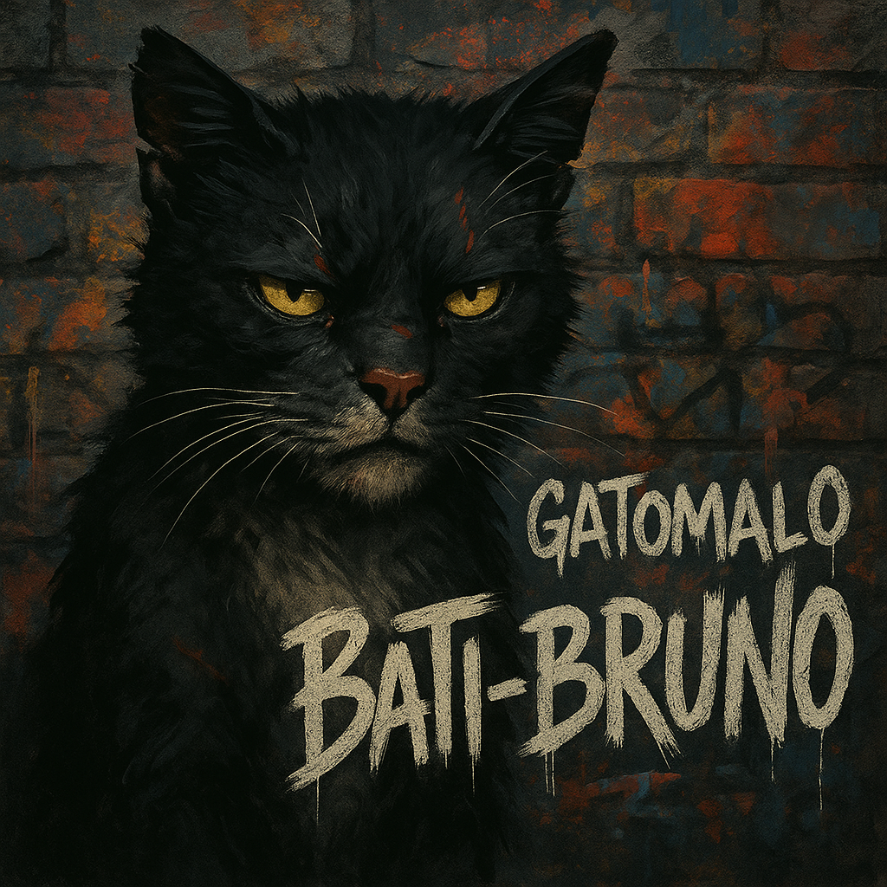

🐾 El Gatomalo del barrio Cap. 1🐾
Dicen que en cada barrio hay un gato callejero con historia, pero ninguno como Bruno. De día, parecía un simple minino más: dormilón, medio despeinado, y con una mirada de "no me hables antes de mi leche". Pero de noche… ¡de noche se transformaba en Gatomalo!

Conocido en los tejados como Bati-Bruno, era el líder de las peleas clandestinas entre gatos del vecindario. Saltaba muros como sombra entre las sombras, y con una sola mirada ponía en su lugar hasta al gato más bravo del callejón. Tenía cicatrices que contaban sus batallas y orejas mordidas que eran trofeos de guerra.
Las mañanas lo veían volver como un guerrero: patas sucias, pelaje revuelto, y a veces cojeando... pero con ese aire de “gané otra vez” que lo hacía imposible de ignorar. Nadie sabía cómo lo hacía, pero siempre regresaba vivo, entero y más leyenda que el día anterior.
Porque Bruno no era un gato cualquiera.
Era el gato.

Era Bati-Bruno.
Era... GATOMALO.
🌒 Capítulo 2: La Noche del Callejón 9
Todo cambió una noche sin luna, cuando el Callejón 9 quedó en silencio absoluto. Los postes parpadeaban. El aire olía a traición. Los Perros Pandilleros habían cruzado la línea: invadieron el territorio felino y se llevaron la caja de sardinas sagradas del Refugio San Patitas. Eso era más que un robo. Era una declaración de guerra.

Y en esa guerra, todos sabían quién iba a aparecer.
Desde lo alto del tanque de agua oxidado, se escuchó un leve miau. Los más sabios se acurrucaron. Los valientes se hicieron los dormidos. Porque ese sonido no era un simple maullido… era la señal.
Bati-Bruno había salido.

Con su capa hecha de bufanda raída y el hocico firme como ladrillo, descendió por los cables como un ninja del barrio. No ladraba, no gruñía, no corría. Caminaba. Porque los verdaderos temidos no hacen ruido: dejan que el miedo lo haga por ellos.
Esa noche, dicen que Bati-Bruno se enfrentó solo a tres pitbulls y un doberman. Que usó el reflejo de la luna en un charco para despistarlos, que les saltó desde una cornisa como un rayo negro y blanco, y que ni un solo pelo perdió. Solo dejó una marca: su garra en el contenedor de basura. Un símbolo. Un aviso.
Desde entonces, ningún perro se ha atrevido a pisar Callejón 9.